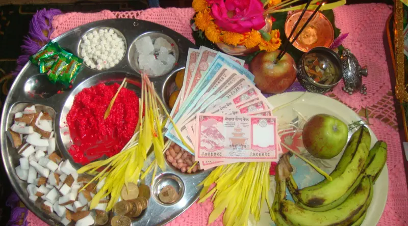

WebP Format Example

About This Image
This photo shows what is set out for tika on Dashain. There is a plate with red tika, yellow jamara, money and coins. Next to it are apples, bananas and a pink flower.
I picked it because it shows the tika and jamara up close, and it matches the plates in my background photo.
Why WebP Format?
I used WebP because it makes small files. This photo has lots of bright colors, and the file is only about 54KB. The only problem is that very old browsers may not open it.
It is also the smallest of my three images, which helps the page load faster.
Image source: Himalayan Masters